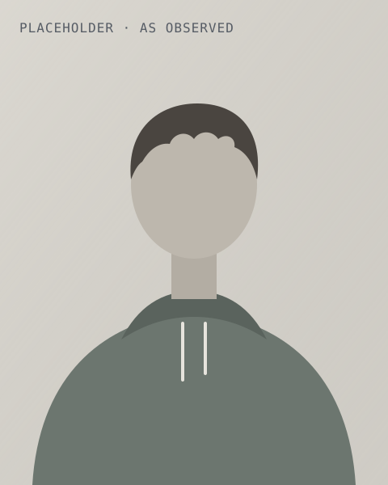

Brand / Portraits
The portrait shift
Each founder card first shows an AI edit of the founder looking sharp and businesslike, labelled Rendered / AI. Once, as the card comes into view, it shifts to the real photograph, labelled As observed. The real photograph is the point.
The images here are placeholders: two styles of the same silhouette. No real or AI-generated faces.
Demo

[Founder name]
[Role, six words or fewer]
[Founder name]
[Role, six words or fewer]
[Founder name]
[Role, six words or fewer]
Review only. On the site it plays once per card and never repeats.
Frame by frame
Six moments of the 600 ms shift: bands cut on the 45° grid slide along their own diagonal, splitting into blueshift (accent) ahead and redshift (signal) behind, and swap from the rendered image to the observed one at staggered moments.
Rules
- The real photo is the default. It is the only image in the HTML. Social cards, LinkedIn, press, no-JS readers, screen readers and anyone with reduced motion get the real photo, still. The rendered version is added by script, only when motion is allowed.
- Once per card, never looping. About 600 ms (500 to 700), when the card is mostly in view. No replay on hover or scroll.
- No flashing. Each band moves once, so there is no flicker, and the accent and signal copies are added so overall brightness holds. Well under three flashes a second, and never a full-frame luminance change.
- A Doppler shift, not a VHS glitch. Bands on the 45° grid, a split in accent (blueshift) and signal (redshift). No scanlines, no RGB noise, no tearing.
- The label tells the truth. It reads Rendered / AI while the edit is on screen and As observed after.
- The two images align pixel for pixel. The AI version is an edit of the real photo: same pose, crop, background, light and eye line. See photography.md.